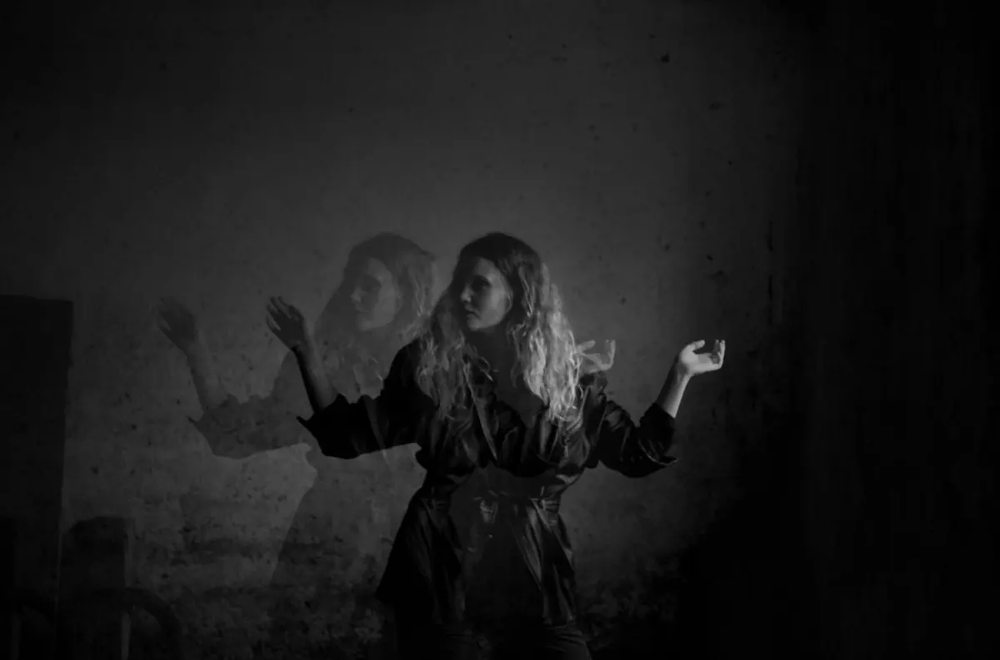
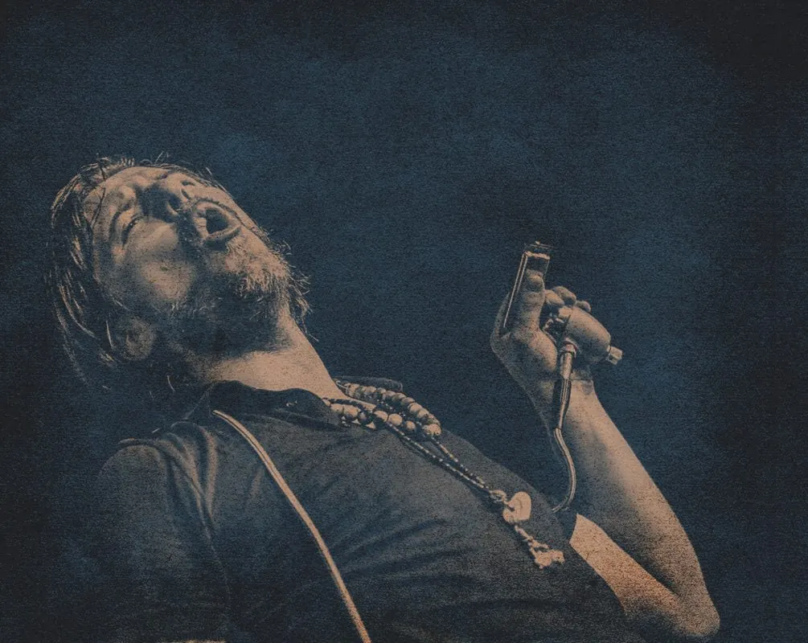
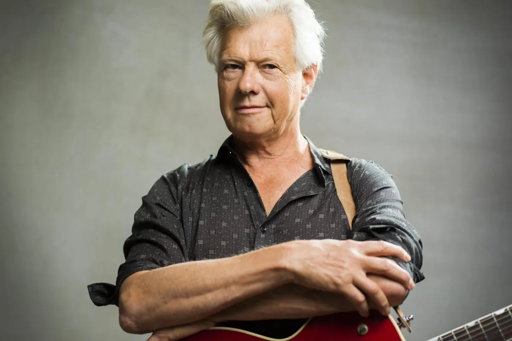

Evenementen bij De Brauerij
Mehrer Straße 1 Kranenburg
Binnenkort
24okt UitgelichtSean Taylor24 okt, 20.00 uurDe Brauerij
8nov
UitgelichtSean Taylor24 okt, 20.00 uurDe Brauerij
8nov
UitgelichtSean Taylor24 okt, 20.00 uurDe Brauerij
8nov
UitgelichtMagda Novels bij de Brauerij8 nov, 15.00 uurDe Brauerij 22novUitgelichtHilde Vos Trio22 nov, 15.00 uurDe Brauerij 6decUitgelichtLotte Walda bij de Brauerij6 dec, 15.00 uurDe Brauerij 13dec
UitgelichtGuy Verlinde bij de Brauerij13 dec, 15.00 uurDe Brauerij 10jan
UitgelichtJeroen Kramer bij de Brauerij10 jan, 15.00 uurDe Brauerij